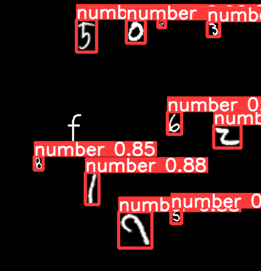

仅识别出数字即可
目标检测出数字
# YOLOv5 🚀 by Ultralytics, GPL-3.0 license # COCO128 dataset https://www.kaggle.com/ultralytics/coco128 (first 128 images from COCO train2017) by Ultralytics # Example usage: python train.py --data coco128.yaml # parent # ├── yolov5 # └── datasets # └── coco128 ← downloads here (7 MB) # Train/val/test sets as 1) dir: path/to/imgs, 2) file: path/to/imgs.txt, or 3) list: [path/to/imgs1, path/to/imgs2, ..] path: ../datasets/MNIST # dataset root dir train: train/images # train images (relative to 'path') 128 images val: val/images # val images (relative to 'path') 128 images test: # test images (optional) # Classes names: 0: number minit.yaml
python train.py --data ./data/mnist.yaml --batch-size 16 \ --epochs 100 --device 0 --name mnist --label-smoothing 0.1 > mnist_train.log 2>&1 python detect.py --weights ./runs/train/mnist/weights/best.pt \ --source ../datasets/MNIST/test/images --conf-thres 0.7 \ --save-txt --save-conf --name mnist > detect.log 2>&1 执行命令
